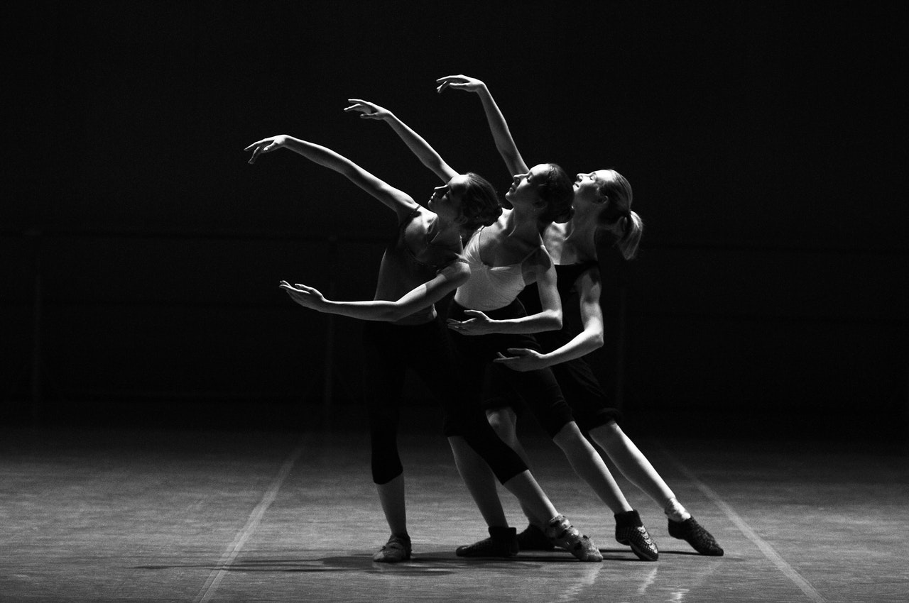
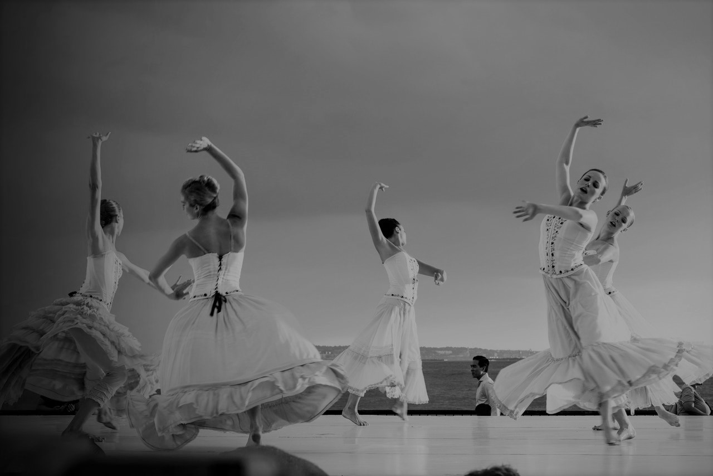

What is Ballet?
Ballet is an art form created by the movement of the human body.
It is theatrical – performed on a stage to an audience utilizing costumes, scenic design and lighting. It can
tell a story or express a thought, concept or emotion. Ballet dance can be magical, exciting, provoking or
disturbing.
Types of Ballet

Story ballets tell a story. They contain narrative action, characters, a beginning and an
end. The Nutcracker and The Sleeping Beauty are famous story ballets from the 19th century; classic stories
and novels such as The Great Gatsby and The Three Musketeers also have been transformed into ballets.
Plotless ballets have no storyline. Instead they use the movement of the body and theatrical
elements to interpret music, create an image or express or provoke emotion. Choreographer George Balanchine
was a prolific creator of plotless ballets.
Styles of Ballet

Classical ballet is what people generally think of first when it comes to “ballet.”
Classical ballet reached its height in 19th- century Russia through the work of choreographers like Marius
Petipa and Lev Ivanov.
Neo-classical ballet was introduced in the 20th century by choreographers like George
Balanchine.
Contemporary ballet is influenced by modern dance. Renowned contemporary ballet
choreographers include Twyla Tharp, Jiří Kylián, Paul Taylor, William Forsythe and Dwight Rhoden.